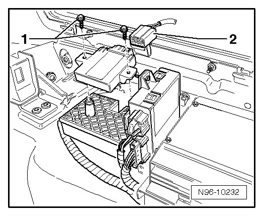

Vehicle Inclination Sensor
Vehicle Inclination Sensor
• To remove the Vehicle Inclination Sensor (G384), anti-theft warning system must be deactivated --> [ Anti-Theft Alarm System, Activating and Deactivating ] Anti-Theft Alarm System, Activating and Deactivating.
Removing
- Switch off ignition, switch off all electrical consumers and remove ignition key.
- Remove right side panel trim in luggage compartment --> Body Interior 70 Removal and Installation
- Disengage connector - 2 - and disconnect it from Vehicle Inclination Sensor (G384).

- Remove mounting bolts - 1 - and remove Vehicle Inclination Sensor (G384) upward out of bracket.
Installing
Install in reverse order of removal.